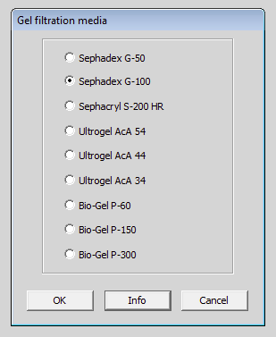
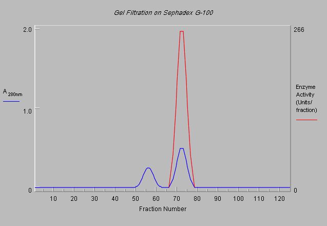
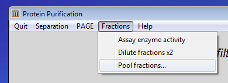
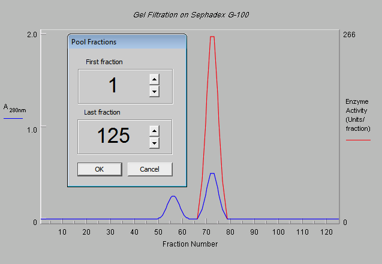
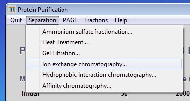
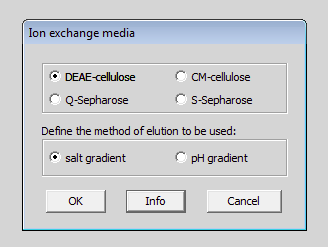
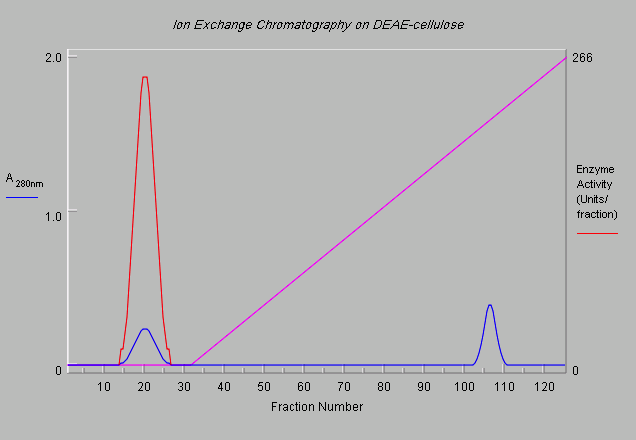
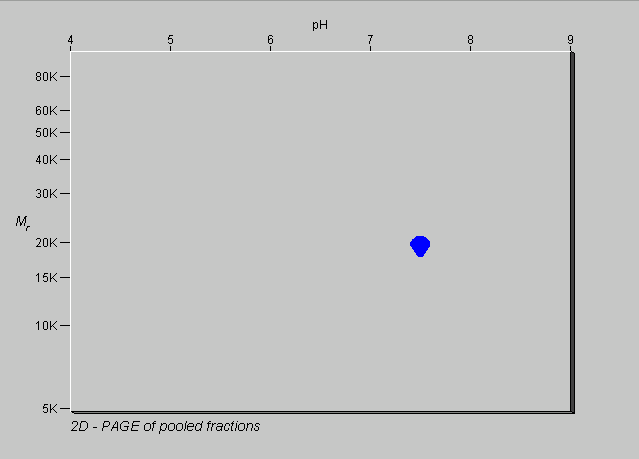

back to the start
previous exercise
next exercise
back to the start
previous exercise
next exercise
Exercise 4 of 6
Purifying a protein - a sequential process
By now you will have realised that you cannot purify protein 2 in a single step by gel filtration or ion exchange chromatography. (The mixture was specially designed to contain two proteins with the same molecular weight and two with the same isoelectric point.) However, by using the two techniques sequentially, it should be possible to purify protein 2. This sequential use of techniques which make use of the different properties of a protein is a key feature of most purification schemes.
Here is one way in which you could purify protein 2.

If you have not already done so, click on the Quit menu and select Abandon this step and continue.

Click on the Separation menu and selectGel filtration...

Select the Sephadex G-100 radiobutton and click the OK button.

You will get the same elution profile as you did last time you used Sephadex G-100. Last time, you identified which proteins were in the two peaks by using 2-dimensional electrophoresis. This is somewhat unrealistic, since 2D gels are time-consuming to set up and run. You certainly wouldn't use them as a routine system for monitoring fractions. Protein 2 is an enzyme, so you can find out which fractions contain it by assaying them all for the enzymic activity.

You may have noticed that the Fractions menu is now available. Use it to Assay enzyme activity.

The enzymic activity (in red) is all in the the second peak, there is none in the first.You need to pool and keep the fractions containing the enzymic activity and throw the rest away.

Click on the Fractions menu and select Pool fractions...

At this point, we need to indicate which fractions which are to be pooled. We only want the second peak.

Adjust the start of the pool to fraction 65 and the end of the pool to fraction 80. The extent of the pool is indicated by shading. You can change it if you want and then check it again. When you are happy with the extent of the pool, click on the OK button.

That is the end of the first step in the purification scheme. The computer gives information at this point to let you know how well (or otherwise) you are doing. A cumulative progress report is available from the Help menu.

You have already established that there is no point in trying any other gel filtration medium, so click on the Separation menu and select Ion exchange chromatography... Do not use the Quit menu, since you want to continue using the pooled material from the last step.

Click on the DEAE-cellulose and salt gradient radio buttons.Then click on the OK button.

As before, set the value to 7.0 and then click on the OK button.

As previously, set the start of the gradient to 0.0 and the end to 0.5 molar.Now click on the OK button.

This is the elution profile you should obtain. Does it look different from that obtained when the whole mixture was used? Which peak contains protein 2? Assay the enzymic activity to find out.

Pool the fractions containing the enzymic activity. Protein 3 should have been removed by the gel filtration step, leaving proteins 1 and 2 to be separated by the ion exchange chromatography. So your material should be pure. It is now worth examining it by 1D- and 2D- electrophoresis to check its purity.

OK, it's pure. Now it is your turn. Click on the Quit menu and select Abandon scheme and start again.
Reload the mixture Easy3_Mixture and see if you can purify protein 2 using a method which involves ion exchange chromatography followed by gel filtration, i.e. the reverse of what you have just done.When you have done that, then you are ready to try purifying proteins from a more complex mixture.